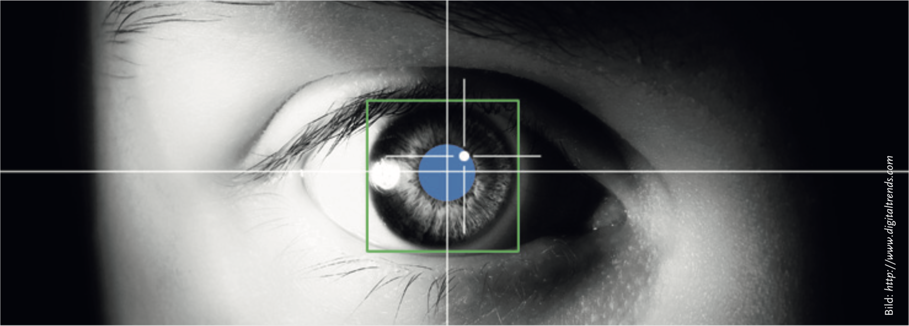

Herzlich Willkommen im VLAB
Sprachverarbeitungslabor der Universität Potsdam!
Um die Verarbeitung von Sätzen erklären zu können, entwickeln Shravan Vasishth und seine Arbeitsgruppe Theorien zur menschlichen Sprachverarbeitung. Mithilfe von verschiedenen experimentellen Methoden möchten wir die Mechanismen erforschen, die unserer Sprachverarbeitung zugrunde liegen.
Zum Beispiel:
Blickbewegungsexperimente (Eyetracking)
Selbstgesteuerte Leseexperimente (Self-Paced Reading)
EEG Studien
Wenn Sie sich für eine Teilnahme an unseren Studien interessieren, können Sie sich über folgende Website direkt in dem Probandenpool der Kognitionswissenschaften der Universität Potsdam anmelden und alle aktuellen Studien einsehen:
Sona Systems
Experimentelle Methoden der Psycholinguistik
Eyetracking
In Blickbewegungsexperimenten (Eyetracking) werden die Augenbewegungen beim Lesen mittels einer Infrarotkamera aufgezeichnet. Ausgehend von der Eye-Mind-Hypothese spiegeln Ort und Dauer von Blickbewegungen den Ort der Aufmerksamkeit und die Dauer von kognitiven Verarbeitungsprozessen wider. Verweilen die Augen zum Beispiel längere Zeit auf einem Wort, lässt sich daraus auf eine erhöhte Schwierigkeit bei der Erkennung des Wortes oder dessen Integration in die Satzstruktur schließen.
Blickbewegungen können nach räumlichen (wohin sich die Augen bewegen) und zeitlichen Aspekten (wann sich die Augen bewegen) interpretiert werden. Die sprunghaften Augenbewegungen während des Lesens (meist von links nach rechts) werden Sakkaden genannt. Diese dauern zwischen 20 und 40 Millisekunden und überspringen in der Regel etwa 8 Buchstaben. Zwischen den Sakkaden verweilt das Auge im Durchschnitt 250 Millisekunden auf einem Wort. Nur während dieser so genannten Fixationen werden visuelle Informationen aufgenommen. Je nach Komplexität des Materials werden Wörter ein- oder mehrmals fixiert oder auch übersprungen. Dabei können auch rückwärtsgerichtete (regressive) Sakkaden zu bereits gelesenen Textstellen auftreten. Diese regressiven Sakkaden geben Aufschluss darüber, wann eventuelle Fehlinterpretationen des Satzes bemerkt und wie diese repariert werden.
Am schärfsten ist unser Sehfeld in der Mitte des Fixationspunkts (der Fovea), die sich über etwa 4 Buchstaben ausdehnt. In der etwas unschärferen Umgebung (der Parafovea) können wir aber immer noch Informationen aufnehmen. Kurze Wörter können dadurch oft schon verarbeitet werden ohne sie direkt zu fixieren, was zum Überspringen dieser Wörter führt.
Die Parafovea ist entlang der Leserichtung verzerrt und umfasst beim Lesen von links nach rechts etwa 3-4 Buchstaben nach links und 7-8 Buchstaben nach rechts. Beim Lesen von z.B. Arabisch oder Hebräisch ist die Parafovea nach links verzerrt.
Elektroenzephalografie (EEG)
Noch genauere Information darüber, wo und wann beim Sprachverstehen im Gehirn etwas vor sich geht, erhalten wir durch Hirnstrommessung mithilfe der Elektroenzephalografie, abgekürzt EEG. Bei neuronaler Aktivität fließen im Gehirn winzig kleine Ströme. Die dadurch entstehende Spannung lässt sich an der Kopfoberfläche messen und liegt in der Größenordnung von 5 bis 100 μV (1 Mikrovolt = 1 Millionstel Volt).
In EEG-Studien zur Satzverarbeitung werden üblicherweise die auftretenden Spannungsveränderungen beim Lesen bestimmter Wörter (so genannte ereigniskorrelierte Potentiale oder EKPs) zwischen Satzpaaren verglichen.
In den Beispielsätzen 1 und 2 ist das letzte Wort entweder Zucker oder Senf. Ob und wann sich beim Lesen dieses Wortes die Messungen zwischen beiden Sätzen unterscheiden, gibt Aufschluss darüber, inwiefern unbewusste Verarbeitungsprozesse auf diese Manipulation reagieren. Wie in der Grafik rechts zu sehen ist, zeigt sich ein stärkerer negativer Ausschlag etwa 400 Millisekunden nachdem das unpassende Wort Senf gezeigt wurde. Den gleichen Effekt beobachten wir, wenn weniger häufige oder unerwartete Wörter gelesen werden. Neben dieser N400 ("N" für "negativ" und "400", weil der Ausschlag 400 ms nach der Wort- präsentation auftritt) gibt es noch andere sprachrelevante Effekte wie z.B. die P600 (ein positiver Ausschlag nach 600 ms) in grammatischen Verletzungen.
1. Er trinkt seinen Kaffee mit Zucker. −−−−−
2. Er trinkt seinen Kaffee mit Senf. - - - - -
Um die Menge an Störsignalen durch Augenbewegungen zu verringern, wurden Sätze bis vor kurzem fast ausschließlich Wort für Wort präsentiert. Mittlerweile nutzen wir Eyetracking und EEG simultan und zeigen den Probanden vollständige Sätze. Dadurch können die Hirnsignale genauen Zeitpunkten während der normalen Satzverarbeitung zugeordnet werden.

Blickspur beim Lesen. Die Größe der Kreise entspricht der Dauer der Fixationen. Lila dargestellt sind rückwärtsgerichtete Fixationen.

So funktioniert Eyetracking: Eine Kamera erkennt die Pupille als dunklen runden Fleck (blau) und eine durch Infrarotlicht erzeugte Spiegelung aufder Hornhaut (weiß). Aus der relativen Position der beiden Punkte wird die Blickrichtung errechnet.

Probandin beim simultanen EEG- und Eyetrackingexperiment. In die EEG-Kappe sind 32 Elektroden eingearbeitet, die die Spannung auf der Kopfhaut messen.
EEG-Kurven zweier Bedingungen. Die inkongruente, also überraschende Bedingung (gestrichelt) zeigt einen negativen Ausschlag nach etwa 400 ms im Vergleich mit der kongruenten Bedingung (historisch bedingt werden in EEG-Auswertungen negative Potentiale nach oben gezeichnet). In der farbigen Grafik ist in Blau der Bereich auf der Kopfoberfläche zu sehen, in dem diese so genannte N400 gemessen wurde.
Ein Blick in den Verstand: Wie wir Sprache verarbeiten
Fragestellungen der Psycholinguistik
- Welche unbewussten Vorgänge liegen der Sprachverarbeitung zugrunde?
- Warum sind manche Sätze schwerer zu verstehen als andere?
- Unter welchen Bedingungen stößt die Sprachverarbeitung an Grenzen und
wie lässt sich das erklären?
- Welche Schädigungen im Sprachsystem verursachen bestimmte Störungen?
Erklärungsansätze in der Satzverarbeitung
Sprachspezifische und sprachübergreifende Strategien
Sowohl die Erkennung von Wörtern als auch deren strukturelle Kombination sind beeinflusst durch die Leseerfahrung in der jeweiligen Sprache. Dies betrifft z.B. die unbewusste Entscheidung für eine Lesart bei mehrdeutigen Sätzen (Ambiguitäten). Ob in Beispiel 1 rechts der Anwalt oder der Filmstar in Frankfurt lebte, unterscheidet sich strukturell in verschiedenen Sprachen. Im Deutschen wird der Anwalt bevorzugt, im Englischen der Filmstar.
Bei so genannten Holzweg-Sätzen (garden-path) in 3. bis 6. stellt man an einer bestimmten Stelle fest, dass man das bisher Gelesene ganz anders verstehen muss, damit es mit dem Rest des Satzes zusammenpasst. Die Ursache dafür sind meistens sprachunabhängige Präferenzen für Late Closure (neue Wörter werden zum aktuellen Satzglied hinzugefügt) und Minimal Attachment (einfachere Strukturen werden bevorzugt).
Ökonomische Nutzung begrenzter Ressourcen
Die Hauptursache für Schwierigkeiten bei komplexen Sätzen ist die Beschaffenheit unseres Arbeitsgedächtnisses. Um die richtige Struktur eines Satzes zu erkennen, müssen verschiedene Elemente des Satzes miteinander in Relation gebracht werden (zum Beispiel ein Verb mit seinem Subjekt und seinem Objekt). Da unser Verarbeitungssystem, jedoch auf Schnelligkeit und Effizienz ausgerichtet ist, geht es dabei nicht immer grammatikalisch korrekt zu. Wenn Subjekt und Verb (wie im Beispiel oben) weit auseinanderliegen, wird es schwieriger, sich richtig zu erinnern.
Durch Verwechslung kann es wie in den Beispielen 1 und 2 rechts zu Illusionen von Grammatikalität kommen, obwohl diese Sätze ungrammatisch sind. In 3. und 4. haben wir es mit lokaler Kohärenz zu tun, die einen Teil des Satzes als eigenständige Einheit erscheinen lässt, obwohl diese nicht mit dem Rest des Satzes zusammenpasst.
Die gleichen Phänomene des Vergessens und Verwechselns, die uns aus dem Alltag bekannt sind, spielen also auch bei solch schnellen Prozessen wie der Sprachverarbeitung eine Rolle. Nur sind sie uns dort meist nicht bewusst.
Die Psycholinguistik ist die Wissenschaft von der menschlichen Sprachfähigkeit. Sie beschäftigt sich mit dem Produzieren und Verstehen von Sprache und deren Repräsentation im Gehirn. Weitere Forschungsgebiete sind der kindliche Spracherwerb und Sprachstörungen.
Problemlos verstehen wir den Inhalt der Sätze 1 und 2. Die zugrundeliegenden Prinzipien, nach denen die Wörter zu einem Satz zusammengefügt werden, befolgen wir unbewusst. Bei den Sätzen 3 und 4 haben die meisten Menschen Schwierigkeiten, obwohl beide Sätze grammatikalisch korrekt sind. Die Schwierigkeiten entstehen allerdings nicht durch die Länge der Sätze, sondern durch deren Komplexität. Dies zeigt eine Umstellung der Wörter im einfacher zu verstehenden Beispiel 5.
1. Gestern starb der Anwalt des Filmstars, der in Frankfurt lebte.
2. Der Wanderer sieht den Jäger mit dem Fernglas.
3. Die Geisel entdeckte am Abend der Polizist, der auf Streife war.
4. Sie pflegt ihre Blumen regelmäßig zu gießen.
5. Was erzählte der Psychologe der Ärztin dem Chefarzt?
6. Since Jay always jogs a mile seems like a short distance to him.
Mit Experimenten und Simulationen sammelt die Psycholinguistik Erkenntnisse über schnelle und automatisierte kognititve Vorgänge. Damit trägt sie zu einem umfassenden Verständnis der Informationsverarbeitung im menschlichen Gehirn bei, die Denken, Lernen und Wissen ermöglicht. Praktische Verwendung finden psycholinguistische Theorien in der Aphasiologie bei der Entwicklung von Therapien für Sprachstörungen.
1. Ein Mann, der keinen Bart hatte, war jemals glücklich.
2. Lars meint, dass die Bildhauerin, die die Zeichnerinnen bewundern, einander gesehen haben.
3. Die Tatsache, dass die Astronautin überrascht den Außerirdischen vom Mars entdeckte, erregte Aufsehen.
4. The coach smiled at the player tossed a frisbee by the opposing team.